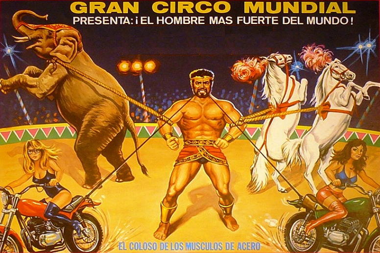

SANSON
ACTUACIONES DESTACADAS
Sanson es un atleta Zaragozano hiper forzudo dedicado a realizar grandes espetaculos de demostración de su fuerza descomunal. Trabaja en el gran circo mundial despues de haber ganado cinco veces seguidas el gran titulo mundial de Strongman. Actualmente, sigue entrenando para conseguir proezas inimaginables para el ser humano. Todo ello acompañado de increibles coreografias de luz y sonido con los mejores interpretes de circo y animales extravagantes adiestrados por el mejor domador de fieras del universo.
SABER MAS Del 2 al 18 de Noviembre
BARCELONA
Instalado en la AVENIDA JOSE ANTONIO